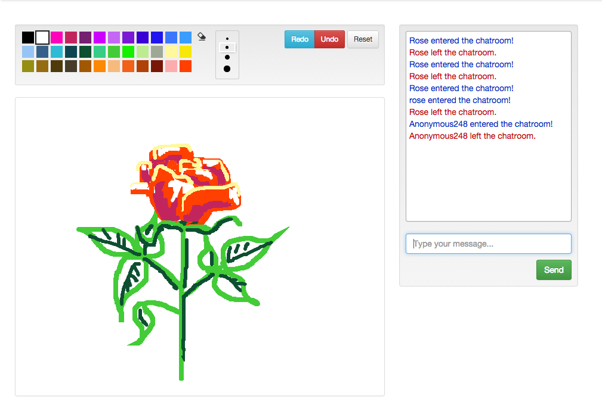
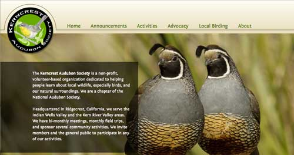

A basic Javascript class for a step-by-step workflow UI element using jQuery.
Wizard.js on Github See an Example
Whiteboard is a real time collaborative drawing app built on Express.js, Node.js, Socket.io, HTML5 . A friend and I built Whiteboard in about 5 days. We started with some very basic goals of what we wanted to accomplish (using an HTML5 canvas, and communicating changes over socket emits), and added other features once the basic features were finished (color picker, undo and redo buttons).
Currently Whiteboard is a bit slow, because it is running in the free tier in Heroku.
Whiteboard on Github Go to Whiteboard
I created a WordPress theme for the Kerncrest Audubon Society.
See it live:
Go to Kerncrest Audubon ClubHi I'm Rose, and I'm a full stack web developer.
In June, 2014 I graduated from the University of Washington with a Bachelor of Science in Human Centered Design and Engineering. It's a degree that includes computer science and engineering, user centered design, user research, graphic design, project management, and information visualization.
After graduating, I won a scholarship to a full stack web developer bootcamp at Coding Dojo. There I honed my web deveopment skills, and got my first post-college job as a Teaching Assistant.
I am currently a software engineer, working remotely for Blackbaud.
In my non-work time I enjoy hiking and birdwatching.